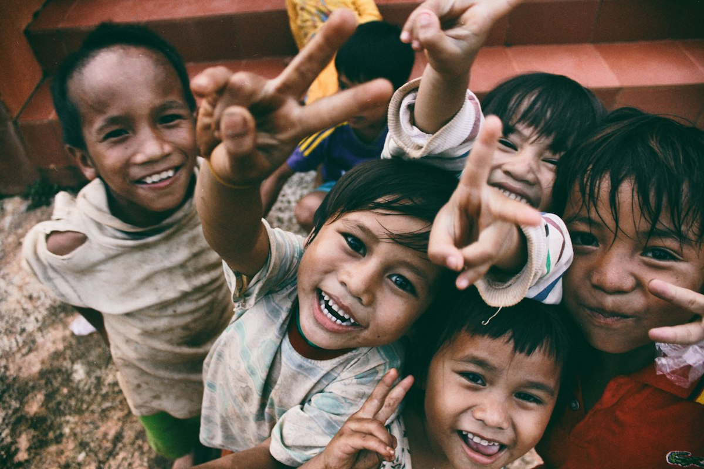

Mentoring
Twenty founders and young engineers, one hour each month. I learn as much as I teach.
An engineer who became a founder, and a founder who learned that the hardest thing to build is not a product — it is a company people are proud to belong to.
I wrote my first program on a borrowed computer, late at night, long before I understood what it would become. What I remember is not the code — it is the feeling of making something that had not existed an hour before. I have been chasing that feeling for more than thirty years.
After university I joined a small software start-up as a junior engineer. I learned two things there that I still carry: that great products are built by small groups of people who care deeply, and that most failures are not technical — they are failures of listening.
In 2002, with three colleagues and a rented garage, I founded Nexora Technologies. We had one idea: enterprise technology should feel effortless. We had no customers, no investors and a single whiteboard. Within eleven months we shipped our first platform to a regional bank, and they trusted us again the following year.
That word — trust — has shaped everything since. Nexora today serves more than 3,000 of the world’s largest organisations, with 62,000 colleagues in 45 countries. The scale surprises me. The principle never does: do what you said you would do, and be honest when you cannot.
I believe the next decade of technology will be decided less by what machines can do and more by the choices leaders make about what they should do. That is the work I am most committed to now — building AI, cloud and security that people can rely on, and a company that leaves things better than it found them.
Drag to explore — keynotes, workshops, offices and the people behind Nexora.

Leadership is a long race. These are the things that make it sustainable.
Twenty founders and young engineers, one hour each month. I learn as much as I teach.
A yearly high-altitude trek with no signal. It resets perspective faster than anything else I know.

The Nexora Foundation funds digital classrooms and scholarships for first-generation students.
The questions I am asked most often by students, founders and journalists.